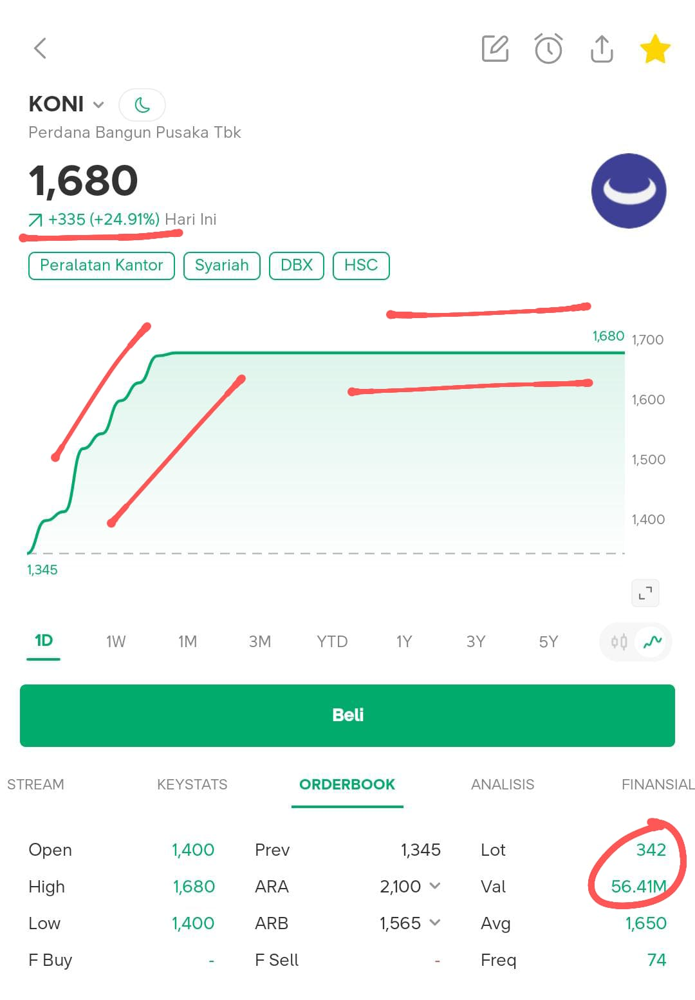
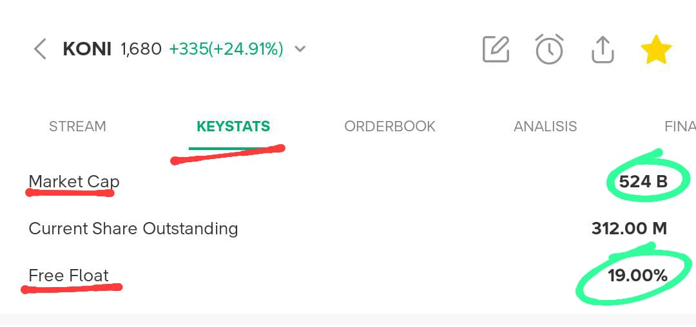
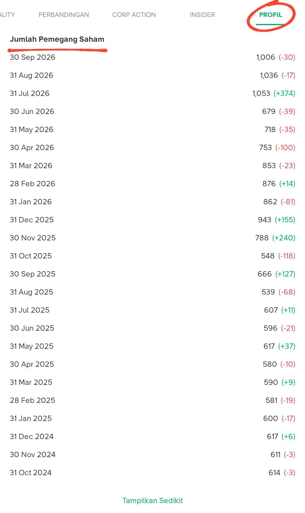
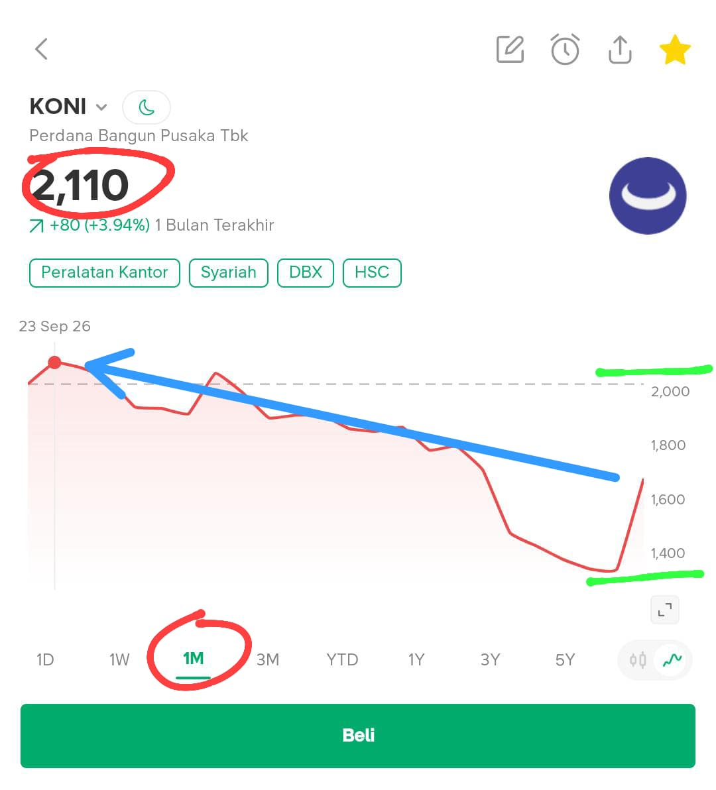

Cara Mencari Saham Berpotensi Bagger
Watchlist
Analisa Transaksi & Fundamental
Cara ini bisa dilakukan disaham yang berstatus HSC (Opsional) diharga saham berapapun.
Disarankan untuk mencari di saham-saham yang kering (Supplynya sedikit).
Kita ambil contoh disaham $KONI
-
Jika dengan Lot (Volume) dan Val (Valuasi) sekecil itu sahamnya sudah naik kencang bahkan ARA bisa kita simpulkan dulu ini kering.

-
Kita cek bagian "Fundamental", pergi ke bagian Keystats lalu lihat Market Cap dan Free Float
Disini tertulis Market Cap 524B (Miliar) dan Free Float 19%.
Sekarang kita hitung, 19% dari 524 Miliar = 99,5 Miliar, artinya sisa barang yang beredar hanya dibawah 100 Miliar, berarti valid kalau saham ini kering.
-
Kita cek bagian "Profil", pergi ke bagian Jumlah Pemegang Saham lalu lihat berapa banyak jumlah pemegang sahamnya.
Pada intinya, cari yang Jumlah Pemegang Sahamnya tidak lebih dari 10,000 pemegang (Sepi).
-
Kita lihat "Grafik" pergerakan harga sahamnya di 1-2 bulan kebelakang, jika hingga hari ini sudah mengalami koreksi dari ATH 1-2 bulannya, maka saat ini waktu yang cukup bagus untuk mengambil Momentum (eksekusi).

Contoh: Jika selama 3 hari Volume dan Valuasinya tergolong kecil tapi kenaikan harian diatas 5% dan positif hijau sampai closingan, ini sudah bisa kalian eksekusi di hari ke 4 nya.
Manajemen Risiko (Wajib)
Perlu di ingat, ke 4 cara diatas kalian wajib memantau dulu sahamnya selama tidak kurang dari 3 hari.
Disarankan masuk bertahap, jika sudah masuk jangan lupa pasangkan Trailing Stop di angka 3-5% untuk mengantisipasi jika terjadi guyuran.